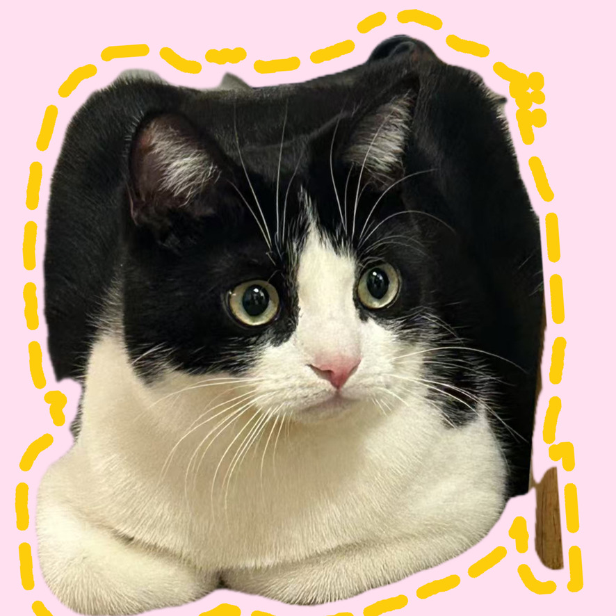
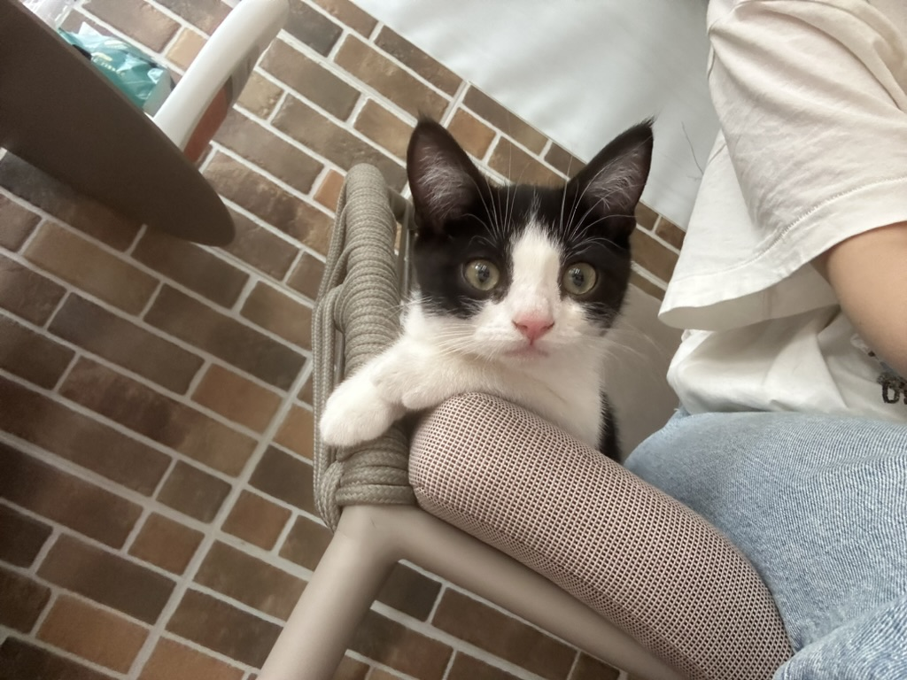
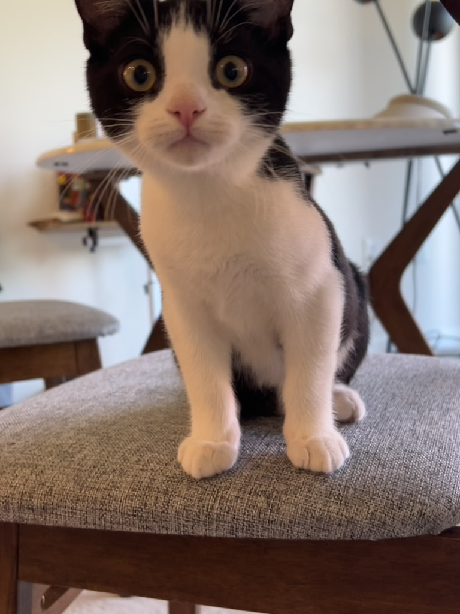
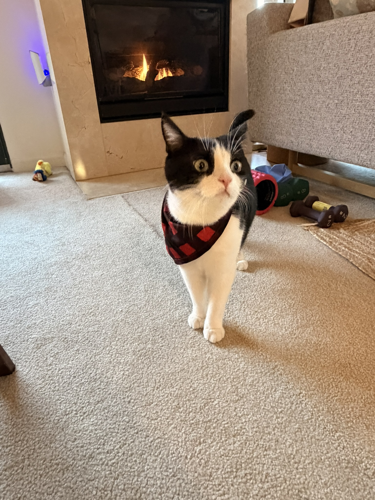

Wangzai (旺仔)
Chief Napping Officer
Born in Wuhan, China · now in the U.S.
Wangzai is a playful, energetic British Shorthair, named after 旺仔牛奶 (Wangzai Milk), a beloved childhood drink in China. He started life in Wuhan, made the long journey across the ocean, and now supervises my work from the comfort of a sunny windowsill.
Timeline

4 months

1 year

These days